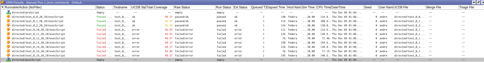

Laboratoire n°02
UART
Département : TIC
unité d’enseignement VSE
Auteur: Andrè Costa & Alexandre Iorio
Professeur: Yann Thoma
Assistant : -
Salle de labo : A07
Date : 13.12.2024
Table des matières
- 1. Introduction
- 2. Analyse du Problème
- 3. Architecture
- 4. Implémentation
- 5. Tests
- 5.1 Scénarios de test
- 5.1.1. - Test 1 d'écriture
- 5.1.2. - Test 2 de lecture
- 5.1.3. - Test 3 à 5 du registre de status
- 5.1.4 - Test 6 des valeurs limites Boundaries
- 5.1.5 Test 7 de la configuration du nombre de cycles par bit
- 5.1.6 Test 8 avec des valeurs aléatoires
- 5.1.7 Test 9 et 10, stress tests
- 5.1.8 Test 11 et 12 Tests Baudrate
- 5.2. Couvertures des valeurs
- 5.3. Assertions
- 5.4. Test supplémentaire possible
- 5.1 Scénarios de test
- 6. Analyse des résultats
- 7. Conclusion
1. Introduction
Ce laboratoire a pour objectif de réaliser le développement et la mise en place d'un banc de test pour un composant UART, avec une hiérarchie UVM. Nous verrons dans ce rapport les différentes étapes de développement, les choix d'architecture, les difficultés rencontrées et les résultats obtenus.
2. Analyse du Problème
Nous n'avons pas connaissance du contenu du DUV et nous devons nous assurer que les données envoyées et reçues sont correctes. De manière générale, nous savons que le design à vérifier ne comporte pas d'erreur. Nous avons donc à disposition un paramètre ERRNO qui nous permettra de simuler des erreurs.
3. Architecture
L'architecture UVM est structurée de la manière suivante:

3.3 Responsabilités des composants
Afin de bien comprendre l'architecture, nous allons détailler les responsabilités de chaque composant.
3.3.1 Avalon Agent
-
SEQUENCER: le séquenceur récupérera le
testcaseà jouer et générera des séquences de transactions à réaliser. Ces séquences seront ensuite transmises audrivervia unFIFO. -
DRIVER: le driver est responsable d'envoyer les transactions au
DUVvia l'interfacevifet d'envoyer une copie de la transaction jouée auscorboardtx. Dans le cadre de ce laboratoire, le driver est également responsable de jouer le rôle demonitoret de transmettre les transactions reçues auscorboardrx, cela de manière à simplifier l'architecture.
3.3.2 UART Agent
-
SEQUENCER: comme le séquenceur de l'agent
Avalon, le séquenceur récupérera letestcaseà jouer et générera des séquences de transactions à réaliser. Ces séquences seront ensuite transmises audrivervia unFIFO. -
DRIVER: le driver est responsable d'envoyer les transactions au
DUVvia l'interfacevifet d'envoyer une copie de la transaction jouée auscorboardtx. -
MONITOR: le monitor est responsable de récupérer les transactions reçues par le
DUVet de les transmettre auscorboardrx.
3.3.3 Scoreboards
-
SCOREBOARDTX: le scoreboardtx est responsable de vérifier que les transactions envoyées par le
driverde l'agentAvalonsont similaires à celle reçue dumonitorde l'agentUART. Il compare les transactions et informe l'utilisateur en cas d'erreur. -
SCOREBOARDRX: le scoreboardrx est responsable de vérifier que les transactions envoyées par le
driverde l'agentUARTsont similaires à celle reçue par ledriverde l'agentAvalon. Il compare les transactions et informe l'utilisateur en cas d'erreur.
4. Implémentation
Afin de pouvoir implémenter les différents systèmes, nous avons admis un baudrate unique de 9600 [baud], ainsi qu'une taille de données DATASIZE de 20 [bit].
De plus, pour pouvoir valider et comprendre le fonctionnement du DUV nous avons décidé d'implémenter en premier le driver du côté de l'agent Avalon. Une donnée a été passée au duv et nous avons remarqué que la sortie tx_o du vif du côté UART était correctement mise à jour. Nous avons ensuite implémenté le driver du côté de l'agent UART et nous avons pu constater que la donnée était correctement reçue du côté Avalon. Dès lors nous sommes capables de communiquer entre les deux agents. Nous avons donc pu implémenter la partie vérification avec l'architecture UVM.
4.1 Données traitées pas le driver de l'agent Avalon
Pour permettre au driver de l'agent Avalon de transmettre des données au DUV, une class avalon_transaction a été définie. Cette class contient les propriétés suivantes:
avalon_transaction_type_t transaction_type;
rand logic [31:0] data;
logic [31:0] clk_to_wait_before_transaction;
Ces trois propriétés permettent de définir la donnée à manipuler, un temps d'attente avant de jouer la transaction ainsi que le type de transaction à jouer.
typedef enum {
UART_SEND,
UART_READ,
SET_CLK_PER_BIT,
ASSERT_TX_FIFO_EMPTY,
ASSERT_RX_FIFO_FULL,
ASSERT_RX_FIFO_EMPTY,
ASSERT_RX_FIFO_NOT_EMPTY,
ASSERT_TX_FIFO_FULL,
ASSERT_TX_FIFO_NOT_EMPTY,
ASSERT_CLK_PER_BIT,
UART_READ_UNTIL_EMPTY
} avalon_transaction_type_t;
Ces types seront utilisés pour définir la commande du driver de l'agent Avalon. En voici la description:
UART_SEND, indique au driver de l'agentAvalonde transmettre une donnée auDUVen écrivant dans le registre ``1UART_READ, indique au driver de l'agentAvalonde lire une donnée duDUVen lisant le registre ``2SET_CLK_PER_BIT, indique au driver de l'agentAvalonde configurer leDUVen écrivant dans le registre ``3ASSERT_TX_FIFO_EMPTYindique au driver de vérifier que le buffertxest vide - Lecture du registre0et vérification des bits0et3ASSERT_RX_FIFO_FULLindique au driver de vérifier que le bufferrxest plein - Lecture du registre0et vérification des bits1et2ASSERT_RX_FIFO_EMPTYindique au driver de vérifier que le bufferrxest vide - Lecture du registre0et vérification des bits1et2ASSERT_RX_FIFO_NOT_EMPTYindique au driver de vérifier que le bufferrxn'est pas vide - Lecture du registre0et vérification du bit2ASSERT_TX_FIFO_FULLindique au driver de vérifier que le buffertxest plein - Lecture du registre0et vérification des bits0et3ASSERT_TX_FIFO_NOT_EMPTYindique au driver de vérifier que le buffertxn'est pas vide - Lecture du registre0et vérification du bit3ASSERT_CLK_PER_BITindique au driver de vérifier que le baudrate est correct - Lecture du registre3UART_READ_UNTIL_EMPTYindique au driver de lire toutes les données du bufferrx- Lecture du registre2jusqu'à ce que le bufferrxsoit vide
4.2 Driver Avalon
Le driver de l'agent Avalon est relativement complexe. En effet, il doit être capable d'interagir avec les différents registres du DUV. Ces registres sont nécessaires pour configurer le DUV, pour transmettre et récupérer des données ainsi que pour connaitre l'état de la fifo de réception et d'envoi.
| Address | Size | Direction | Description |
|---|---|---|---|
0x0 |
x | Read | Status register |
0x1 |
20 | Write | Send register |
0x2 |
20 | Read | Receive register |
0x3 |
32 | Read / Write | Configuration : cycle / bit |
Les valeurs obtenues lors de la lecture du registre de status à l'adresse 0x0 sont les suivantes:
| Bit | Description |
|---|---|
0 |
Send buffer full |
1 |
Receive buffer full |
2 |
number of élément inside receive buffer |
3 |
Send buffer empty |
Le driver de l'agent Avalon recevra les transactions du séquenceur et en fonction de la commande afféctée, il jouera la transaction correspondante grâce à sa tâche:
task do_transaction(avalon_transaction transaction);
Cette task contient un Switch case relatif à la propriété transaction_type du paramètre transaction. En fonction de la valeur de cette propriété, le driver jouera la transaction correspondante.
Afin de pouvoir exécuter tous les types de transaction, le driver implémente les task suivantes:
task do_read(logic [13:0] address);
task do_write(logic [13:0] address, logic [31:0] data);
Si une commande de lecture ou d'écriture est reçue, le driver transmettra la transaction au DUV via l'interface vif et enverra une copie de la transaction au scoreboardtx ou au scoreboardrx.
Dans le cas où une commande de vérification est reçue, le driver lira le registre correspondant et vérifiera que les valeurs sont correctes. Si une erreur est détectée, une assertion sera levée. Aucune copie de la transaction ne sera envoyée au scoreboardtx ou au scoreboardrx.
Pour terminer, si le driver reçoit une commande de configuration, il configurera le DUV en écrivant dans le registre correspondant. Aucune copie de la transaction ne sera envoyée au scoreboardtx ou au scoreboardrx.
4.3 Driver UART
Le driver de l'agent UART est relativement simple. Il doit envoyer des données au DUV via le vif sur l'entrée rx_i. Le baudrate définit est identique à celui de l'agent Avalon, à savoir 9600 [baud].
Pour pouvoir effectuer cette action, le driver de l'agent UART implémente la task suivante:
task run;
Cette task attend simplement une transaction, vérifie si le baudrate n'a pas été changé et écrira la donnée bit par bit en attendant le temps nécessaire entre chaque bit.
Ce temps nommé ns_per_bit est calculé de la manière suivante:
pour un baudrate de 9600 [baud], nous obtenons donc:
Bien entendu, la transaction jouée par le driver de l'agent UART est également envoyée au scoreboardrx pour vérification.
4.4 Monitor UART
Le monitor de l'agent UART est responsable de récupérer les transactions reçues par le DUV et de les transmettre au scorboardrx. Pour ce faire, le monitor fonctionne comme le driver de UART mais en lisant les données reçues par le DUV sur la sortie tx_o du vif.
En fonction de la précision du temps d'attente entre la lecture de chaque bits nous ne pouvons pas lire de manière complètement synchronisée avec l'écriture du driver de l'agent Avalon. Afin de garantir que la lecture du bit désirée est correcte, nous avons décidé de décaler le début de la lecture de:
pour un baudrate de 9600 [baud], nous obtenons donc:
Cela permet de lire le bit au milieu de la période d'écriture du bit par le driver de l'agent Avalon.
4.5 Scoreboards
Étant donné que nous sommes en mesure de récupère les données transmises et reçues par le DUV via les différents composants de notre architecture, nous pouvons implémenter les scoreboards.
L'implémentation des scorboards est relativement simple et fonctionne, pour les deux scoreboards, de la manière suivante:
- Récupération de la transaction envoyée par l'un des
driver - Récupération de la transaction reçue par l'autre
driverpour l'agentAvalonou lemonitorpour l'agentUART - Vérification de la commande de la transaction et levée d'une assertion en cas de commande incorrecte.
- Comparaison des données envoyées et reçues, comptabilisation des erreurs et informations de l'utilisateur.
4.6 Difficultés rencontrées et solutions
Lors du développement de ce laboratoire, nous avons rencontré quelques difficultés. Afin de les résoudre, nous avons mis en place les solutions suivantes:
4.6.1. Arrêt prématuré de la simulation
Lors de nos premiers tests de transmission, nous avons subi des arrêts de simulation prématurés, en effet, nous avions que la moitié du premier bit envoyé. Après avoir investigué, nous avons constaté que le driver nous n'implémentions pas le principe d'objection permettant d'informer l'environnement que nous sommes en train d'effectuer un travail et que le test bench doit attendre que cette objection soit désactivée.
Pour cela nous avons ajouté aux composants qui effectuent des tâches qui dépasserait la durée du drain_time de 210'000 [ns] , une objection de type raiseavant de débuter la tache. Une fois terminé, nous utilisons l'objection de type drop qui laissera le test bench s'arrêter si plus aucun travail n'est à faire.
Voici les éléments qui ont nécessité l'ajout d'une objection:
- Scoreboard TX et RX: Lors du traitement des deux transactions reçues
- Driver Avalon: lors de l'exécution d'une transaction (lecture, écriture, etc.)
- Driver UART: lors de l'envoi d'une donnée
- Moniteur UART: Lors de la détection du bit de start jusqu'à la fin de la lecture des données
4.6.2. Quantité de données à lire inconnue du côté Avalon
Selon le scénario de test, par exemple, lors de tests de couvertures, nous pouvons être dans une situation où nous ne savons pas combien de données seront envoyées du côté UART. Le driver Avalon ne sait pas combien de données il doit lire.
Nous avons décidé de rajouter une commande UART_READ_UNTIL_EMPTY qui permet de lire toutes les données de la FIFO RX. Cette commande est envoyée par le séquenceur Avalon et permet de lire toutes les données reçues sans savoir combien il y en a.
4.6.2. Le problème de 1h du matin de André le BG trop fort
//TODO expliquer le problème et la solution stp
5. Tests
Nous avons maintenant un système complet qui permet de vérifier la communication entre les deux agents. Nous allons donc pouvoir réaliser des tests.
Ces tests seront réalisés selon le un numéro de testcase transmis en argument lors de l'exécution du testbench.
Dans les séquenceurs, ce numéro de testcase est utilisé pour définir les transactions à jouer.
Il y a une forte correspondance entre le séquenceur de l'agent Avalon et le séquenceur de l'agent UART. En effet, les deux séquenceurs doivent jouer les mêmes scénarios, mais du point de vue de l'agent qu'ils contrôlent.
5.1 Scénarios de test
Afin de garder la même convention tout au long du développement, nous avons décidé que write et read sont toujours du point de vue de l'agent Avalon.
De ce fait, un read côté Avalon est une écriture côté UART et vice versa.
5.1.1. - Test 1 d'écriture
Le premier test consiste à vérifier que la donnée que nous écrivons du côté de l'agent Avalon est bien reçue du côté de l'agent UART.
De plus, nous vérifions que le registre de status de manière à nous assurer que le fifo d'envoi n'est pas vide.
5.1.2. - Test 2 de lecture
Ce deuxième test consiste à vérifier que la donnée que nous écrivons du côté UART est bien reçue du côté Avalon.
Ici, il devient évident l'utilité d'avoir une façon d'indiquer à notre driver de patienter avant de lire la donnée, en effet, sans cela, le driver Avalon essayerait de lire la donnée avant que le driver UART n'ait eu le temps de l'envoyer.
De plus, nous vérifions que le registre de status de manière à nous assurer que le fifo de réception n'est pas vide.
5.1.3. - Test 3 à 5 du registre de status
Les tests 3 à 5 sont des tests qui permettent de vérifier que les flags de status pour les FIFOs sont correctement mis à jour.
- Test 3 - vérifie que la fifo
txest bien détectée comme vide. - Test 4 - envoie
FIFOSIZE + 1données pour vérifier que la fifotxest bien détectée comme pleine. - Test 5 - du côté UART, on envoie
FIFOSIZEdonnées - du côté Avalon, on attend que la fiforxsoit pleine et on lit toutes les données
5.1.4 - Test 6 des valeurs limites Boundaries
Ce sixième test vérifie ce qu'il se passe avec les données aux limites, c'est-à-dire, l'envoie de 0 et de 2^DATASIZE - 1. Ceci est fait en parallèle des deux côtés, UART et Avalon.
5.1.5 Test 7 de la configuration du nombre de cycles par bit
Le septième test vérifie que la configuration que nous écrivons dans le registre 3 est bien prise en compte.
5.1.6 Test 8 avec des valeurs aléatoires
Le huitième test consiste à envoyer des valeurs aléatoires jusqu'à ce qu'une certaine quantité de valeur aient été couvertes.
5.1.7 Test 9 et 10, stress tests
Ces tests sont les derniers tests automatiques que nous avons implémentés.
Pour finisaliser les tests automatiques, nous avons ajouté deux tests de stress, un test RX et un test TX.
Pour le test tx et rx, nous transmettons des données et nous nous assurons de la maintenir les fifo relatives à tx ou rx pleines pendant toute la durée du test.
La durée du test s'étend sur l'envoi de FIFOSIZE * 10 données.
5.1.8 Test 11 et 12 Tests Baudrate
Ces tests ne sont pas des test automatiques, et le testcase 0 ne les lancera pas. Ce sont des tests qui produisent des erreurs.
En effet, ces tests vont, du côté Uart, envoyer des données avec un baudrate incorrect, qui va s'incrémenter/décrémenter gentiment. Ceci permet de voir à quel moment le DUV n'arrive plus à lire les données correctement.
Ici nous pouvons voir que le DUV arrive à bien travailler avec un baudrate entre ~9300 et ~9900 pour un baudrate défini à 9600.
Voici l'output des tests:
Test 11 - Baudrate trop haut

Test 12 - Baudrate trop bas
5.2. Couvertures des valeurs
Pour le testcase 8 nous avons ajouté une couverture des valeurs pour les données envoyées et reçues.
Afin de rester pertinant et ne pas impacter trop fortement la charge de calcul, nous avons décidé d'ajouter dans la class avalon_transaction le covergroup suivant:
covergroup cov_group;
cov_data: coverpoint data[DATASIZE-1:0] {
bins petit = {[0 : max_value() / 4]};
bins grand = {[max_value() - (max_value() / 4) : max_value()]};
bins all_values[DATASIZE] = {[max_value() / 4 + 1 : max_value() - (max_value() / 4) - 1]};
}
endgroup
Ce covergroup nous semble raisonnable, car il permet de vérifier que les valeurs limites sont bien couvertes ainsi que les valeurs intermédiaires.
5.3. Assertions
En plus de la simulation, nous avons remarqué la possibilité d'y ajouter des assertions qui aident à la vérification du système.
Typiquement, le fait que byte_enable_i n'est pas utilisé, ou, que, lors d'une lecture, la donnée est valide le coup de clock suivant nous avons pu retranscrire ces assertions de la manière suivante:
// En lecture, la donnée est prête un cycle après que avl_read_i est à ’1’.
// En lecture, avl_readdatavalid_o s’active lorsque la donnée est disponible.
assume_readdatavalid_after_read :
assume property (avl_read_i |=> avl_readdatavalid_o);
//Le signal byteenable n’est pas utilisé.
assume_byteenable_is_not_used :
assume property (avl_byteenable_i == 8'hf);
En plus, quelques vérifications sur le range des adresses:
//Valide qu'on n'essaie pas de lire une adresse plus grande que 3
assume_address_on_read_is_lower_than_4 :
assume property (avl_read_i |-> (avl_address_i < 4));
//Valide qu'on n'essaie pas d'écrire une adresse plus grande que 3
assume_address_on_write_is_lower_than_4 :
assume property (avl_write_i |-> avl_address_i < 4);
Sur la cohérence des bits de status:
// Vérifie que le status du buffer tx est cohérent
// i.e le status vide et le status plein ne sont pas les deux à 1
assume_status_register_tx_fifo_status_coherence :
assume property (avl_read_i && (avl_address_i == 0)
|=> (avl_readdata_o[3] == 0 || (avl_readdata_o[3] != avl_readdata_o[0])));
// Vérifie que le status du buffer rx est cohérent
// i.e si le buffer est plein, il faut aussi que le registre indique un
// élément disponible
assume_status_register_rx_fifo_status_coherence :
assume property (avl_read_i && (avl_address_i == 0) ##1 avl_readdata_o[1] |-> avl_readdata_o[2]);
Sur les protocole UART et Avalon:
//En écriture, avl_waitrequest_o permet de faire patienter le master
// selon le fonctionnement normal du bus avalon.
assume_wait_request_is_respected :
assume property (avl_waitrequest_o && avl_write_i |=> avl_write_i && (avl_writedata_i == $past(
avl_writedata_i
)));
// vérifie que la ligne tx_o repasse `eventuellement` à 1
assume_tx_eventually_goes_back_to_1 :
assume property ($fell(tx_o) |=> ##[0:$] tx_o == 1);
// vérifie que la ligne rx_i repasse `eventuellement` à 1
assume_rx_eventually_goes_back_to_1 :
assume property ($fell(rx_i) |=> ##[0:$] rx_i == 1);
5.4. Test supplémentaire possible
Il aurait été idéal de pousser ces vérifications plus loin, en vérifiant par exemple que la ligne tx passe à 1 au bout de DATASIZE * clk_per_bit.
Étant donné que le nombre de clk_per_bit n'est pas fixe, il nous est difficile de savoir quand une lecture va commencer.
6. Analyse des résultats
Nous avons maintenant un système complet qui permet de vérifier la communication entre les deux agents et ainsi lancer des scénarios couvrant la major partie du fonctionnement du DUV.
Le lancement de tous les scénarios , hormis les tests 11 et 12, nous donne de bons résultats.
Afin de nous assurer de la bonne implémentation des tests ainsi que la pertinence des scénarios, nous avons exécuté le tout avec des valeurs ERRNO entre 10 et 16 qui génère incohérences dans les données envoyées et reçues.
Cest test ont été insérés dans Questa Verification Run Manager. En voici la sortie:

La durée des tests confirme la pertinence de notre coverage en atteignant les 100% au bout de ~ 2 [min].
7. Conclusion
Ce laboratoire nous a permis de concevoir et de mettre en œuvre un banc de test en SystemVerilog pour vérifier un périphérique UART. En intégrant des drivers, moniteurs, scoreboards, assertions et objections, nous avons créé un environnement de test robuste couvrant divers scénarios, incluant les cas limites, stress tests, et configurations aléatoires.
Les tests ont confirmé le bon fonctionnement du périphérique dans des conditions normales et identifié les limites lors de l'utilisation de baudrates non conformes. Les assertions ont renforcé la vérification en garantissant le respect des protocoles UART et Avalon.
Ce projet a démontré l'importance d'une approche méthodique en vérification, en mettant en avant la précision nécessaire pour synchroniser les composants et gérer efficacement les transactions. Ce fut une excellente opportunité d’approfondir nos compétences en vérification tout en validant un système complexe.